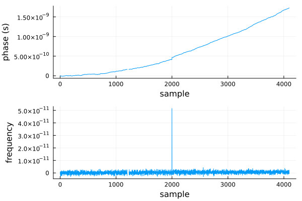
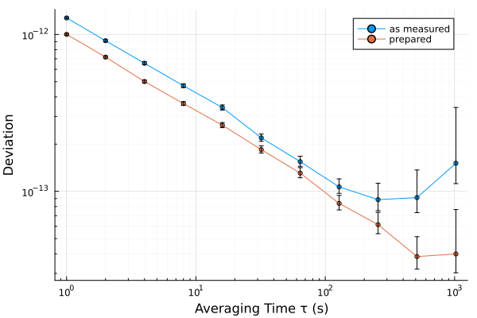

Gaps, outliers and drift
A deviation describes the noise of a clock. A measured record also holds what is not noise: readings that are missing, outliers and steps, a frequency offset and a drift. The aim of preparing a record is to take out as much of this deterministic behavior as can be explained, so that what remains is random (SP1065 §10.2).
The record used on this page is simulated white FM to which a drift, a phase step and a gap have been added:
using SigmaTau, Random
clock = noise_gen(PhaseData, 4096, 1.0; sigma1 = Dict(0 => 1e-12), rng = Xoshiro(1))
x = copy(clock.x)
x .+= 1e-16 .* (0:4095) .^ 2 # a frequency drift of 2e-16 per second
x[2000:end] .+= 5e-11 # a phase step of 50 ps
x[1200:1229] .= NaN # 30 readings lost
p = PhaseData(x, 1.0)A first look
summarize counts the missing samples, lists the outliers and estimates the drift:
s = summarize(p)
s.gaps, s.outliers, s.drift_per_day(30, [2000], 1.5509020720684214e-11)Plot the record as well, as phase and as frequency. SP1065 asks that automatic checks add to an inspection of the data and not replace it (§10.11).
using Plots
plot(plot(p.x; ylabel = "phase (s)"), plot(FrequencyData(p).y; ylabel = "frequency");
layout = (2, 1), legend = false, xlabel = "sample")
Gaps
A missing sample is NaN. The readers place one wherever the time column skips a reading, so the samples around it keep their true spacing (Timestamps and gaps).
The Allan and Hadamard deviations, their modified and time forms, mtie and tierms skip gaps: a term counts when every sample it reads was measured (SP1065 §10.4). The result reports the number of terms used, and the EDF follows from it:
adev(p, [1, 16, 256]).neff3-element Vector{Int64}:
4062
4002
3494The total estimators, pdev, theo1, theoh and the dynamic deviations need a complete record and throw an error on one with gaps. The spectra return NaN. There are two ways to give them one:
- analyze the longest stretch without gaps, for example
PhaseData(p.x[1230:end], p.tau0); - fill the gaps with
fillgaps, which puts reflected copies of the neighboring samples in their place.
Filled samples are not measurements. SP1065 calls a result suspect when there are many of them (§10.6), and the fillgaps reference gives the error the fill causes in simulation. Where an estimator can skip the gaps, let it.
A missing phase sample is one reading lost from a time scale that is otherwise intact, and only the terms that read it are skipped. A missing frequency sample loses the phase change across it, so every term whose span contains it is skipped. One gap in the middle of a frequency record removes most of the terms at long averaging times. When the instrument gives both, analyze the phase.
Outliers and steps
find_outliers applies the test of SP1065 §10.11 to the fractional frequency: a sample is an outlier when it lies more than nsigma scaled median absolute deviations from the median, 5 by default.
find_outliers(p)1-element Vector{Int64}:
2000A phase step is a spike in frequency, which is why the test is made there, and the step lands on the sample found. Left in the record, the spike raises the deviation at short averaging times like white FM of a large level (SP1065 §10.11).
remove_outliers replaces the outlying frequency samples and sums the record back to phase, which takes the step out:
q = remove_outliers(p)
summarize(q).gaps, find_outliers(q)(30, Int64[])The samples that were missing stay missing. fillgaps fills them, when an estimator needs a complete record.
Two cautions:
- Explain each outlier before removing it (SP1065 §10.11). One that belongs to the measuring system can go. One that belongs to the clock is part of its behavior.
- A strong drift hides outliers. The test compares each sample with the median of the whole record. Where the drift carries the frequency across many times its scatter, remove the drift first.
Frequency offset and drift
A constant frequency offset changes none of the deviations of fractional frequency or of time, which are built on second and third differences of the phase. It does enter mtie and tierms, as the offset times $τ$. detrend(p; method = :linear) removes it from a phase record.
A linear frequency drift $D$ adds $D^2τ^2/2$ to the Allan variance. drift_fit estimates it, with a standard error:
d = drift_fit(q)
d.rate, d.rate_stderr # per day; the drift added was 1.73e-11(1.5551222692162992e-11, 1.1543228277436536e-12)detrend(q; method = :quadratic) removes it from the phase. The two curves below are the Allan deviation of the record as measured and as prepared:
plot([adev(p), adev(detrend(q; method = :quadratic))];
label = ["as measured" "prepared"])
The step raised the short averaging times and the drift the long ones.
The standard error of the fit assumes white residuals and is too small where they are not. Judge a model by its residuals: random residuals are the sign that it fits, and the physics of the device can help choose it (SP1065 §5.26, Table 14). drift_fit also fits the logarithmic and diffusion models of an oscillator that is still stabilizing. The Hadamard family needs no fit at all (Choosing an estimator).
What cannot be removed
A frequency step means that the statistics changed during the record. SP1065 advises dividing such a record and analyzing the portions separately (§10.3). dadev shows where the stability changes (Plotting and tables).
While reading
The readers can remove a trend and fill gaps as they read:
p = read_phase("clock.txt"; detrend = :quadratic, fillgaps = true)The explorer does this page's checks on its Data page (The explorer), and sigmatau check prints them on the command line (Command line).